How the Watan-e-Pak portal thinks, stores and serves
A visual tour of the AI real-estate portal for Pakistan: the web portal, the portable app, the FastAPI backend with its MCP server, the cited knowledge base, assistant memory, PostgreSQL storage, the GIS stack and the CRM. Read it top to bottom once; afterwards use the contents rail as a map when you change something.
One backend, three faces
Buyers, agents and staff use the web portal or the portable app (Android, iOS, desktop). AI clients such as Claude Desktop use the same backend through MCP. Everything goes through one FastAPI process that owns the data, the security rules and the AI.
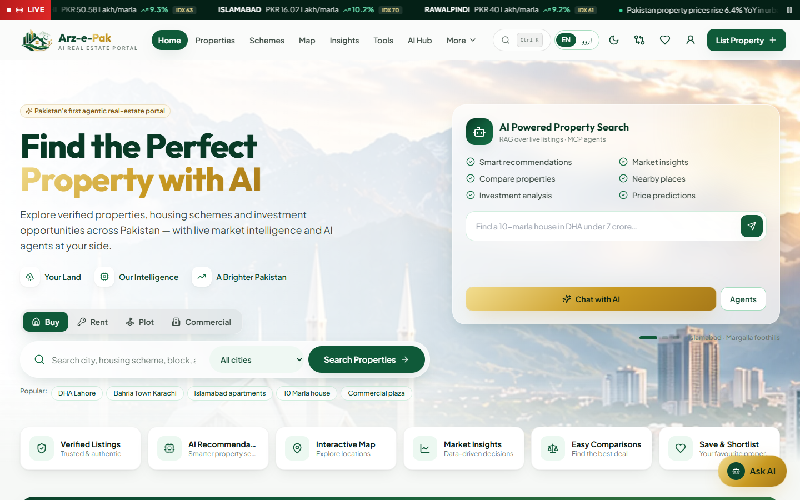
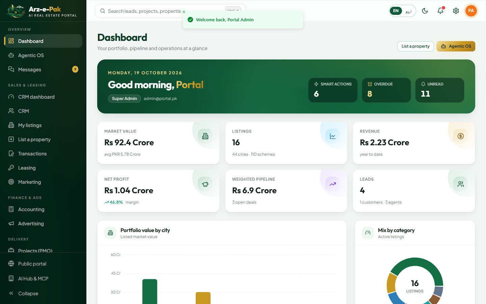
/app): CRM, transactions, leasing, accounting, PMO, messages and Administration. What appears depends on the signed-in role.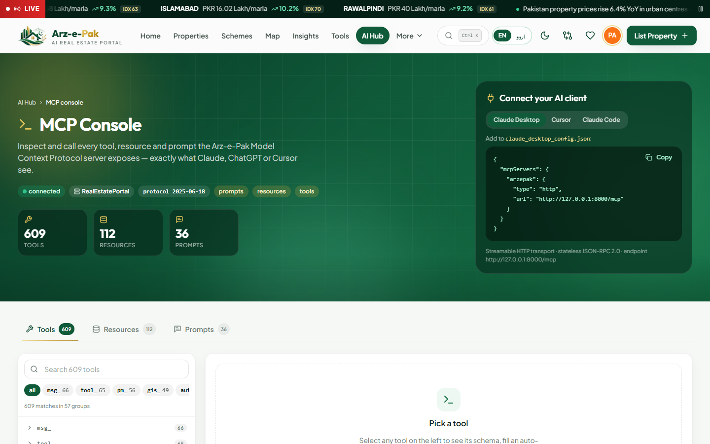
What you need to know before touching the AI code
Large language models (LLMs) predict text. Everything "smart" in this portal is plumbing around that one ability, and five ideas cover it.
1 · The prompt is the program
The model only knows what is in its context: the system prompt (rules and persona), the conversation, and whatever we paste in. Ours lives in one place, backend/prompts.py, so web, app and voice behave alike.
2 · Tools let it act
With function calling the model answers "call search_listings with city=Lahore" instead of guessing. Our code runs the tool and hands back the result. The model never touches the database itself.
3 · RAG gives it facts
Retrieval-augmented generation: before the model answers, we search our own data and paste the best matches, each numbered [1], [2]…, into the prompt. The model cites them; the UI shows the sources.
4 · Memory is just more context
The model forgets everything between calls. "Memory" means we store facts (budget, preferred areas) per user and paste the relevant ones back in. Users can see and delete it.
5 · MCP is a plug standard
The Model Context Protocol describes tools, resources and prompts in a format any AI client understands. Our 609 tools are written once and reach Claude Desktop, Cursor, LM Studio and our own agents.
…and the golden rule
A model can sound sure and be wrong ("hallucination"). We counter that with facts from tools and RAG, trust tiers on every source, a prompt that forbids guessing, and human approval before an agent changes anything.
Where every piece lives
The backend is one Python process. api.py exposes REST, server.py holds the business logic as MCP tools, and topic modules (GIS, CRM AI, accounting, PMO, messaging…) sit beside it. Data lives in memory for speed and is mirrored to PostgreSQL or SQLite.
| Folder | What it is | Run it |
|---|---|---|
backend/ | FastAPI + MCP server, all business logic, AI, storage, tests | uv run python main.py (port 8000) |
frontend/ | Web portal: React 18, Vite, TypeScript, Tailwind, react-query, Leaflet | npm run dev (port 5173, proxies /api) |
portable/ | Mobile and desktop app (Capacitor for Android/iOS, Electron for desktop), same API | npm run dev; npx cap run android |
db/ | Generated PostgreSQL schema export (migrate_to_postgres.py) | uv run python migrate_to_postgres.py all |
docs/ | Guides: administration, API, MCP, agentic AI, messaging, testing, security, this page | — |
From click to database in six hops
- The app sends
PUT /admin/properties/{id}withAuthorization: Bearer <session token>. The portal never uses cookies, so CSRF does not apply. - AccessGuard (
access.py) finds the first matching rule for the method and path:properties.manage. It loads the user from the token, checks the permission and returns 401/403 if needed. Paths with no rule are denied for writes. - The handler in
api.pyvalidates the body with Pydantic and calls the module (property_admin.save), which checks business rules: the scheme belongs to the city, the coordinates are inside Pakistan, sizes stay in sync. - The change is made in memory (
properties_db), so the next read is instant. - PersistOnWrite marks the store dirty; a few seconds later
storage.pywrites only the changed rows to PostgreSQL / SQLite. - The JSON response goes back through gzip and the security headers. react-query refreshes the affected lists in the UI.
detail; missing sign-in is 401, missing permission 403. An unexpected crash returns 500 with an error_id that matches the server log line, and never leaks a stack trace.Who may do what
Accounts sign in with e-mail, username or mobile plus a password, or with a one-time code. Passwords are hashed with PBKDF2-SHA256 at 600,000 rounds; the round count is stored with each hash so it can be raised later without breaking old logins.
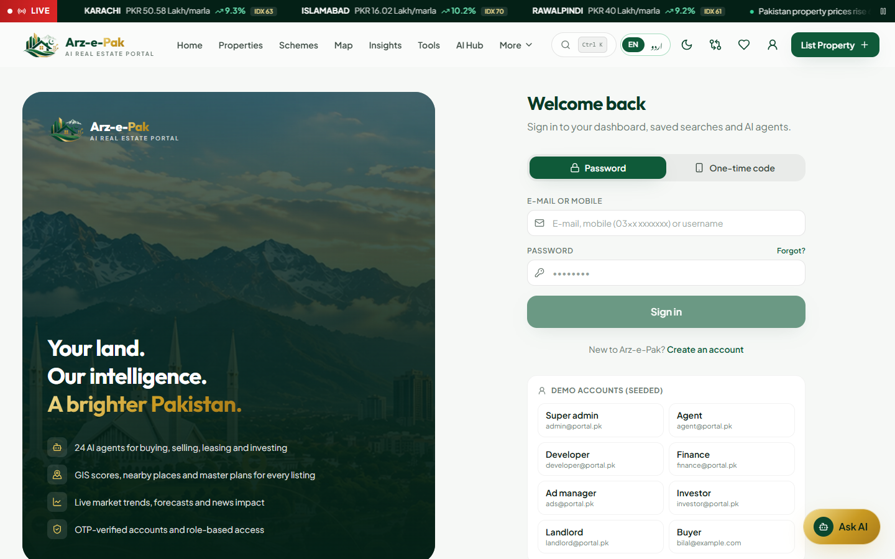
PORTAL_SEED_DEMO); production hides them and does not create them.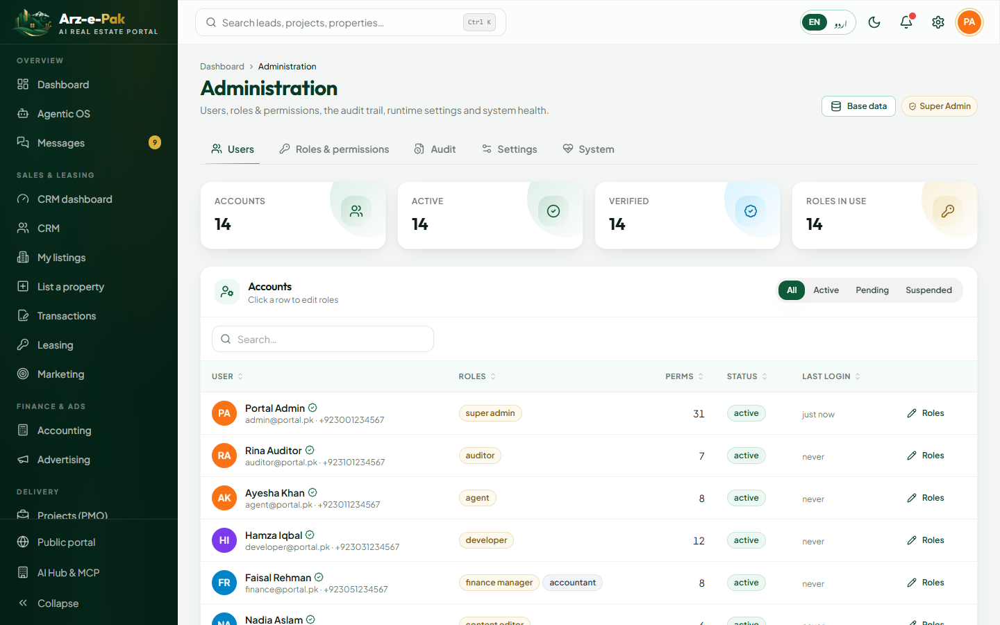
| Protection | How it works | Where |
|---|---|---|
| Login lockout | 5 failed attempts in 15 minutes lock the account for 15 minutes; unknown users cost the same time (no account probing) | auth.login |
| Sessions | Random 256-bit bearer tokens with an expiry; changing a password ends every other session | auth.set_password |
| One-time codes | Shown in API responses only outside production (PORTAL_AUTH_EXPOSE_OTP) | auth.AUTH_CONFIG |
| Deny by default | An ordered rule table: public, user, a named permission, admin, mcp or docs. A write with no rule is refused | access.py |
| Own records | Agents see only their own CRM book; messaging checks the user is the member | access.agent_scope |
| Front end | Routes and menu items hidden without permission; expired sessions sign out with a "Sign in" prompt | RequirePermission, store/auth.ts |
700 routes, one convention
REST handlers in api.py are thin: they validate input, call the matching tool in server.py (which returns JSON text) and turn {"error": …} into a proper HTTP status. The interactive docs are at /docs in development only (PORTAL_EXPOSE_DOCS).
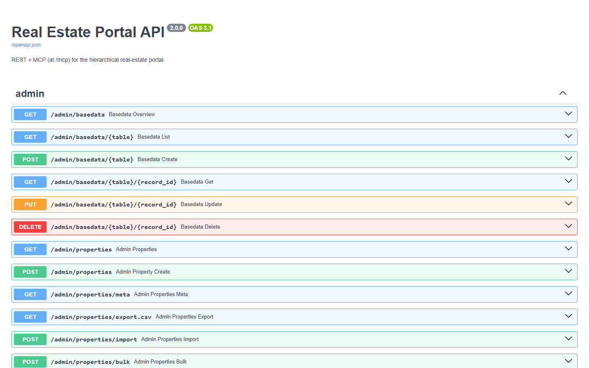
Adding an endpoint
# 1. business logic as an MCP tool (server.py) — AI clients get it for free
@mcp.tool()
def scheme_summary(scheme_id: str) -> str:
"""One-paragraph summary of a housing society with its approval status."""
s = find_scheme(scheme_id)
return dump({"error": "Unknown scheme"} if not s else {"name": s.name, "approval": s.approval_status})
# 2. REST wrapper (api.py)
@app.get("/schemes/{scheme_id}/summary", tags=["schemes"])
def scheme_summary(scheme_id: str) -> Any:
result = j(core.scheme_summary(scheme_id))
if "error" in result:
raise HTTPException(status_code=404, detail=result["error"])
return result
# 3. access rule (access.py) — GETs are public unless a rule says otherwise
_add("GET", r"^/schemes/[^/]+/summary$", "public")
# 4. a check in test_integration.py, then: uv run python test_integration.py609 tools any AI client can use
MCP runs at /mcp (streamable HTTP). Every tool carries hints so clients can auto-approve safe reads and ask before deletes: readOnlyHint destructiveHint openWorldHint. Prompts are ready-made expert tasks.
Who may connect
A static PORTAL_MCP_TOKEN as a bearer token, a signed-in admin session, or (development only) a local client on the same machine.
Expert prompts
scheme_legality_check, property_due_diligence, comparative_market_analysis, mega_project_impact, urdu_assistant_reply, plus 31 earlier ones.
AI-specific tools
knowledge_search (cited facts), my_memory_recall / remember / forget, rag_search, agent_run / agent_approve.
// claude_desktop_config.json
{
"mcpServers": {
"watanepak": {
"type": "http",
"url": "https://api.your-domain.pk/mcp",
"headers": { "Authorization": "Bearer <PORTAL_MCP_TOKEN>" }
}
}
}Answers that show their sources
knowledge.py indexes listings, cities, housing societies (with approval status and sources), infrastructure mega projects, news and guide pages, and ranks them with BM25, a classic and fast search formula, in about 2 ms per question. It understands how people in Pakistan ask.
knowledge.search). The context block goes into the system prompt; the model quotes the [n] markers and the web chat lists the cited sources under the reply.| Trust tier | Means | Examples |
|---|---|---|
| Official | Government, regulator or development authority | .gov.pk, .gop.pk, .gos.pk sites, SBP, RDA illegal-societies list, DHA's own sites |
| Verified | Checked by a portal administrator, or the portal's own guides | guide pages, admin-verified news |
| Reference | Established reference or major news outlet | Wikipedia, Dawn, Business Recorder, The News, OpenStreetMap |
| Listing | Submitted by an owner or agent; not independently checked | every property listing |
| Unverified | Anything else, including sample data | seed news linking only to a homepage |
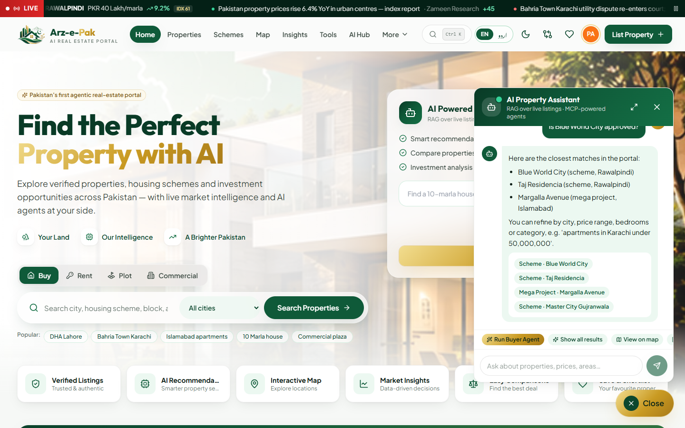
[n] and the sources list appears under it. web_lookup fills gaps from the web, preferring official sites and caching answers for 6 hours.Near memory and long-term memory
memory.py keeps two kinds of memory for signed-in users. Guests get none. Nothing here is visible to other users or to admins.
Near (short-term)
The last turns of each conversation, so "and in Lahore?" makes sense after a page reload or on another device. 14 days, at most 200 turns per user. Saved by /ai/context (questions) and /ai/turn (replies).
Long-term
Facts learned from what users ask: budget, size, type, renting or buying, cities and schemes, language; plus notes they ask to keep ("remember I work in Blue Area"). A newer budget replaces the old one. CNIC, card numbers and passwords are refused.
| Endpoint | Does |
|---|---|
GET /me/memory | What the assistant remembers about me |
POST /me/memory | Remember a note |
DELETE /me/memory/{id} · DELETE /me/memory | Forget one item · forget everything (turns included) |
PUT /me/memory/settings | Switch memory on or off |
Look first, act after a human says yes
An agent run (agents.py) is a planned list of tool steps with an audit trail. Tools that only read run first; tools that create, send or change something wait behind the review gate until a person approves. The approval is recorded under the signed-in user's name.
approve defaults to false everywhere; only the portal's own scheduled jobs pre-approve.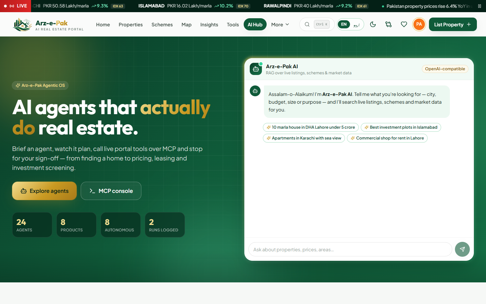
Every map layer is a database record
Base maps (streets, satellite, light, dark) are tile sources. Every other layer is a GeoLayer record: the built-in overlays (listings, places, provinces, districts, city names, DTM terrain, water, roads, live roads, mega projects), the DHA master plans and anything an admin uploads. A layer appears on the public map only when an admin has published it; on a fresh install they all start unpublished.
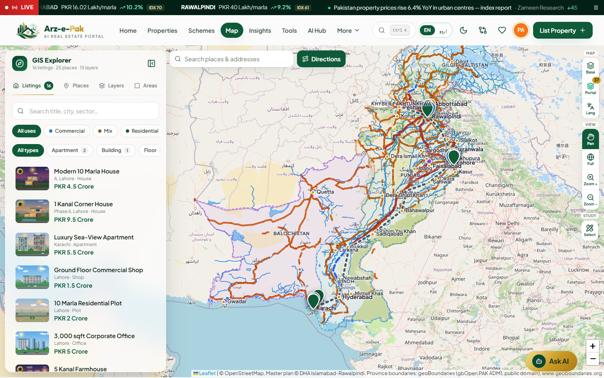
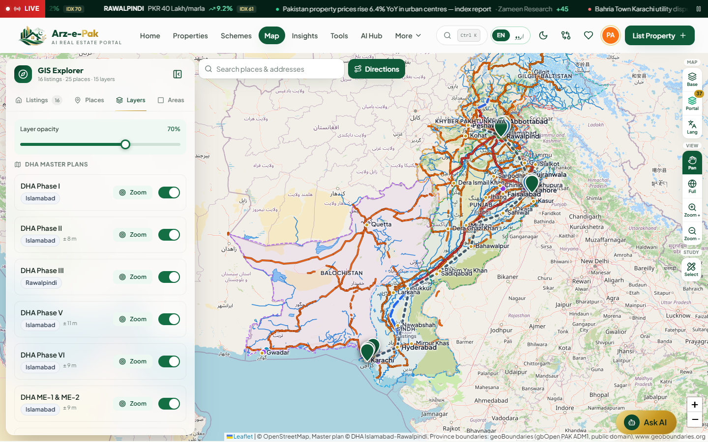
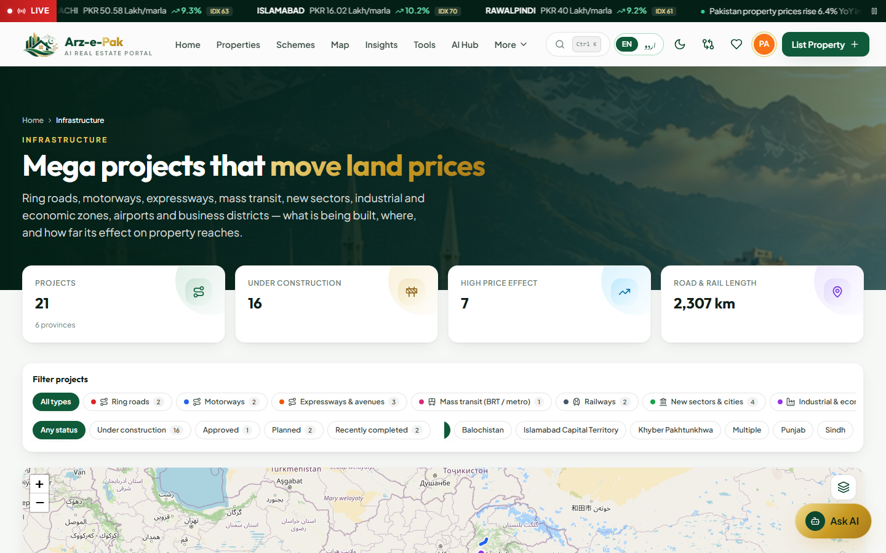
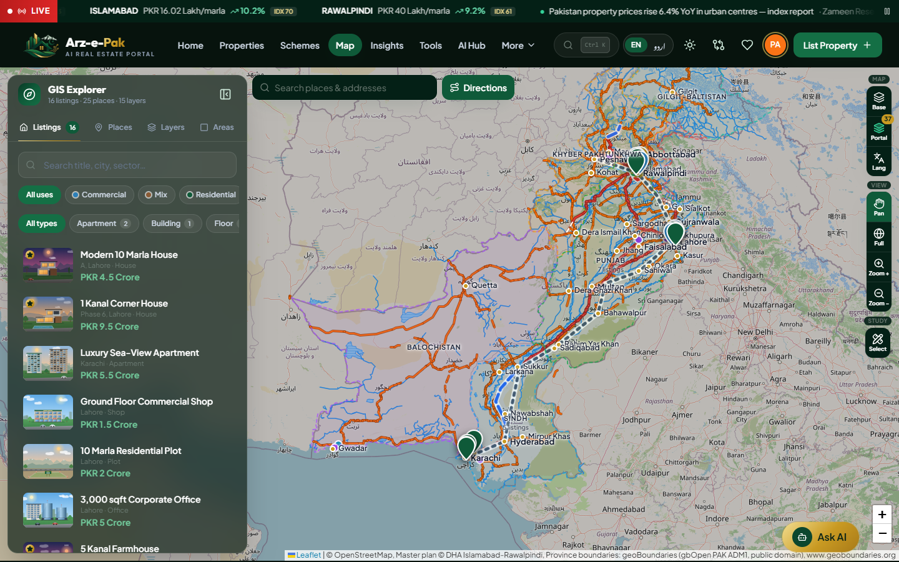
| Data | Source | Served by |
|---|---|---|
| Roads, water bodies, districts, points of interest | OpenStreetMap extracts (build_roads.py, build_water.py, build_districts.py) | /geo/roads, /geo/water, /geo/districts, /geo/places |
| Provinces, cities | geoBoundaries (gbOpen PAK), PBS Census 2023 | /geo/provinces, /geo/cities |
| Terrain (DTM) | SRTM 30 m via AWS Terrain Tiles | tiles, drawn in the browser |
| DHA master plans | Georeferenced plan PDFs (build_masterplans.py) | /masterplans/… tiles + label layers |
| Uploaded layers | GeoJSON, KML, GPX, CSV from Administration | /gis/layers/{id} |
"unpublished": true to everyone without gis.manage, so hiding a layer also hides its data, not just its toggle.Leads to deals, with an AI copilot
Leads, customers, deals, tasks and appointments, plus transactions with deadlines and e-signatures. The CRM copilot answers questions from live CRM data ("who should I call first?"); WhatsApp and Telegram messages land on the lead's timeline through signed webhooks.
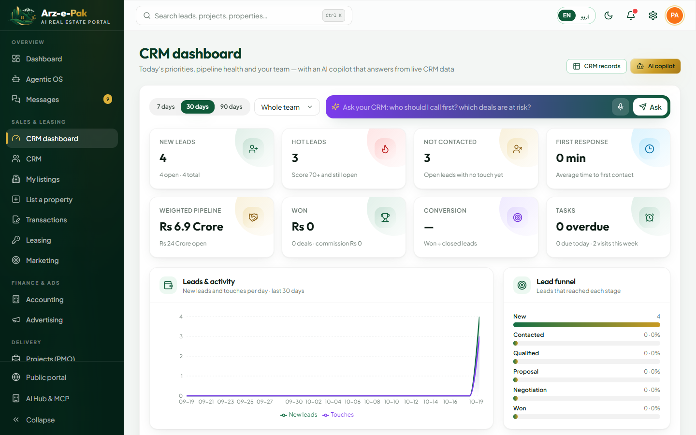
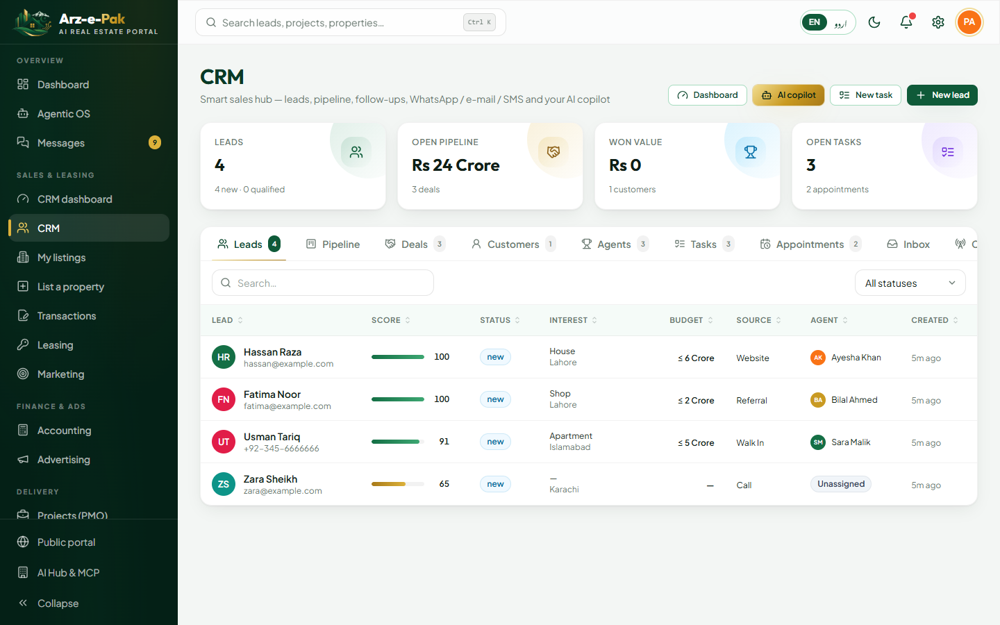
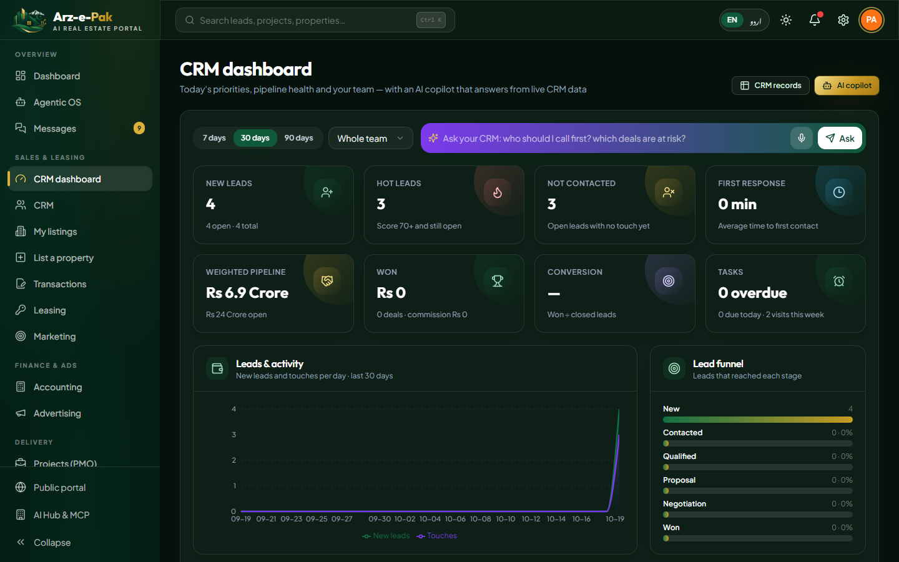
Fast in memory, safe on disk
The portal works on in-memory stores for speed. storage.py mirrors every store into one table, portal_rows(store, key, ord, data), with the data as JSONB on PostgreSQL. Each flush hashes every row and writes only what changed, so a busy portal writes a handful of rows every few seconds.
Switching to PostgreSQL
# backend/.env
DATABASE_URL=postgresql://watanepak:<password>@localhost:5432/watanepak
# install the driver once
uv pip install "psycopg[binary]"
# check: signed in as an admin
GET /portal/storage → backend, rows per store, last flush
POST /portal/storage/flush → save now
# backups
pg_dump -Fc watanepak > watanepak-$(date +%F).dumpmigrate_to_postgres.py still generates a fully normalised schema (one table per store, foreign keys) for reporting and BI tools; the live portal uses the document table above.Four data tools for staff
Under Administration in the staff sidebar. Each needs its own permission, so a GIS technician can manage layers without touching users.
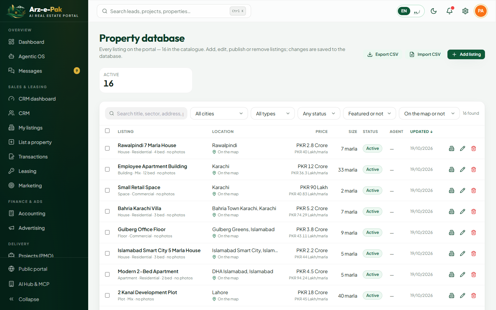
properties.manage). Search, filter, sort and page every listing; bulk feature, change status, assign an agent or delete; CSV export and a checked CSV import.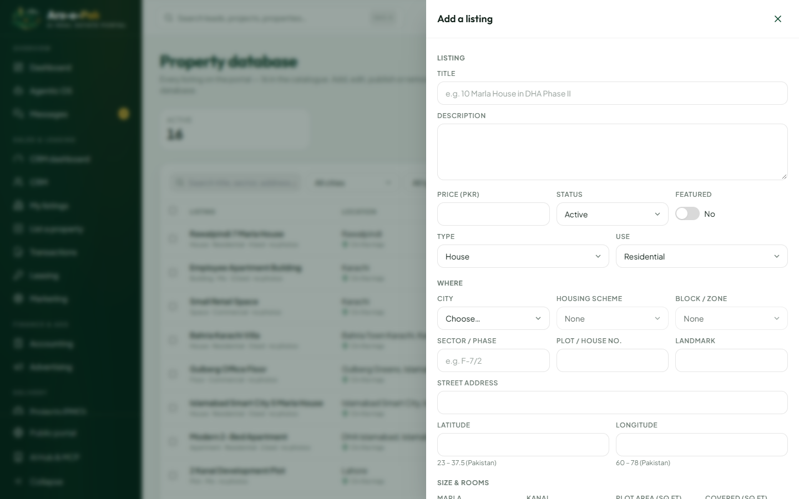
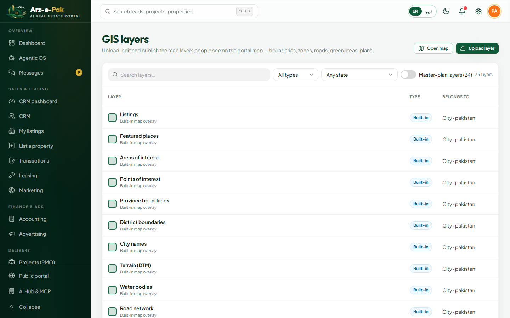
gis.manage). Published and on-by-default switches per layer, "Publish all" on a fresh install, edit style, replace geometry, download GeoJSON, delete. Built-in overlays can't be deleted.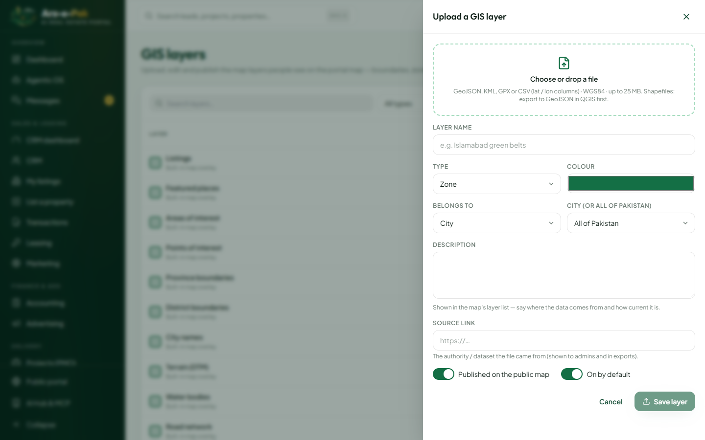
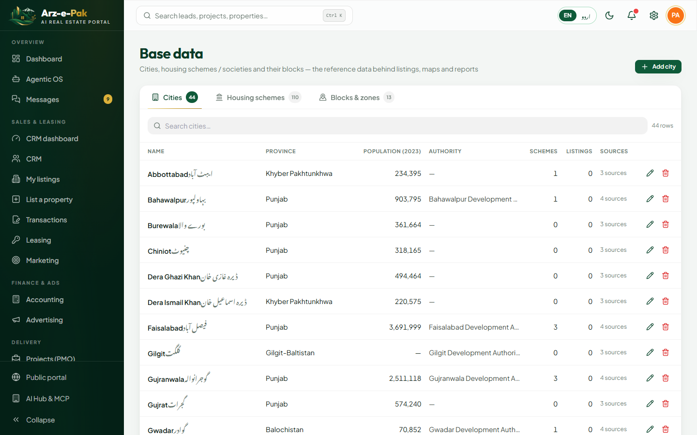
basedata.manage). 44 cities and 110 housing societies with approval status and their sources. These records feed the knowledge base, so a source added here becomes a citation in the assistant's answers.Same backend in a pocket
The portable app (portable/) is React + Capacitor for Android and iOS, and Electron for desktop. It shares the API, the session model and the assistant's memory and knowledge; its own prompt adds voice and language rules. Voice runs on OpenAI Realtime; tool calls from one voice response run together and get one follow-up reply.
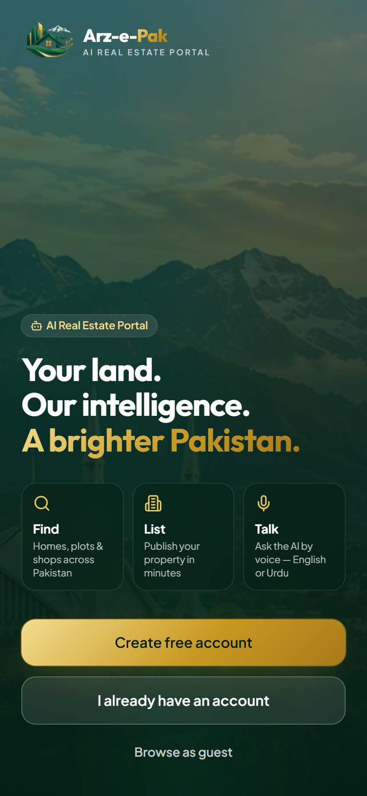
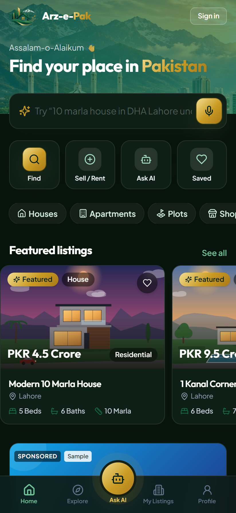

Before you go live
| Set | Why |
|---|---|
PORTAL_ENV=production | Turns on the safe defaults: no demo accounts, no codes in responses, docs hidden, HSTS, strict CORS |
PORTAL_MCP_TOKEN | A long random token for AI clients; without it only admin sessions reach /mcp |
PORTAL_CORS_ORIGINS, PORTAL_ALLOWED_HOSTS | Only your own web, app and API hosts |
DATABASE_URL | PostgreSQL with backups; SQLite is fine for a single small server |
PORTAL_WHATSAPP_APP_SECRET, PORTAL_TELEGRAM_WEBHOOK_SECRET, PORTAL_CRM_WEBHOOK_SECRET | Webhooks reject unsigned calls |
PORTAL_TRUST_PROXY=1 | Only behind your own HTTPS reverse proxy, so rate limits see the real client address |
| API keys | Keep them only in backend/.env (git-ignored); rotate any key that was ever pasted elsewhere |
Built in: escaped map popups and inlined JSON (no script injection from data), http(s)-only links in AI answers, request size limit, security headers (CSP for HTML, nosniff, frame and referrer policy), server-chosen AI model and capped output, and an error id instead of a stack trace. Full list: docs/SECURITY_AND_OPERATIONS.md.
Where the next features plug in
Semantic search
Add embeddings (/v1/embeddings is already proxied) and store vectors with pgvector; blend them with BM25 in knowledge.search. Keep the citation format so the UI needs no change.
New knowledge sources
Add a block to knowledge._docs() with a tier from sources.py. Prefer records that carry their sources; add new official domains to sources.OFFICIAL_DOMAINS.
A new agent
Describe it in agents.AGENTS with its tools; the engine orders reads before the human gate and writes after it. Add a dispatch case in _agent_tool_dispatch.
A new map overlay
Serve it from a /geo/… endpoint guarded by _unpublished("builtin:key"), add the key to BUILTIN_LAYERS, and gate the toggle with on("key") in MapExplorer.tsx.
Scaling out
One process today. For several API servers, move sessions and rate limits to Redis and make PostgreSQL the source of truth per request (the db/ schema is the starting point).
Single sign-on
Add an OIDC login that issues the same session token; access.py and every permission check keep working unchanged.
Testing
cd backend
uv run python test_integration.py # 1,243 checks: MCP, REST, security, AI, admin, storage (PORTAL_PERSIST=0)
cd ../frontend && npx tsc -b --noEmit # web types
cd ../portable && npx tsc -b --noEmit # app typesWords you will meet in the code
- LLM
- Large language model: predicts text; ours is reached through OpenAI's API.
- System prompt
- The standing instructions sent before the conversation (
prompts.py). - Function calling
- The model asks us to run a named tool with JSON arguments.
- RAG
- Retrieval-augmented generation: search first, then answer from what was found.
- BM25
- A ranking formula that rewards rare matching words and penalises long documents.
- Embedding
- A list of numbers representing meaning; similar texts get nearby vectors.
- MCP
- Model Context Protocol: a standard way to offer tools, resources and prompts to AI clients.
- Hallucination
- A confident answer that is not supported by facts.
- Marla / kanal
- Land units: 1 kanal = 20 marla; the portal counts 225 sq ft per marla.
- Crore / lakh
- 1 crore = 10,000,000 PKR; 1 lakh = 100,000 PKR.
- NOC
- No-objection certificate from a development authority (RDA, CDA, LDA…); a key legality check for a housing society.
- GeoJSON
- The JSON format for map features; coordinates are [longitude, latitude].